Here I discuss how I achieved the requirements and my features that i have on my website.
I made the pom.xml file so I can use dependencies and some of them include the likes of Spring boot, mySQL, and Thymeleaf. I also have more to improve my overall project, such as being able to interact with my database and being able to connect spring boot to mySQL.
I also used Spring boot initialiser so it could create me the project structure that I needed.
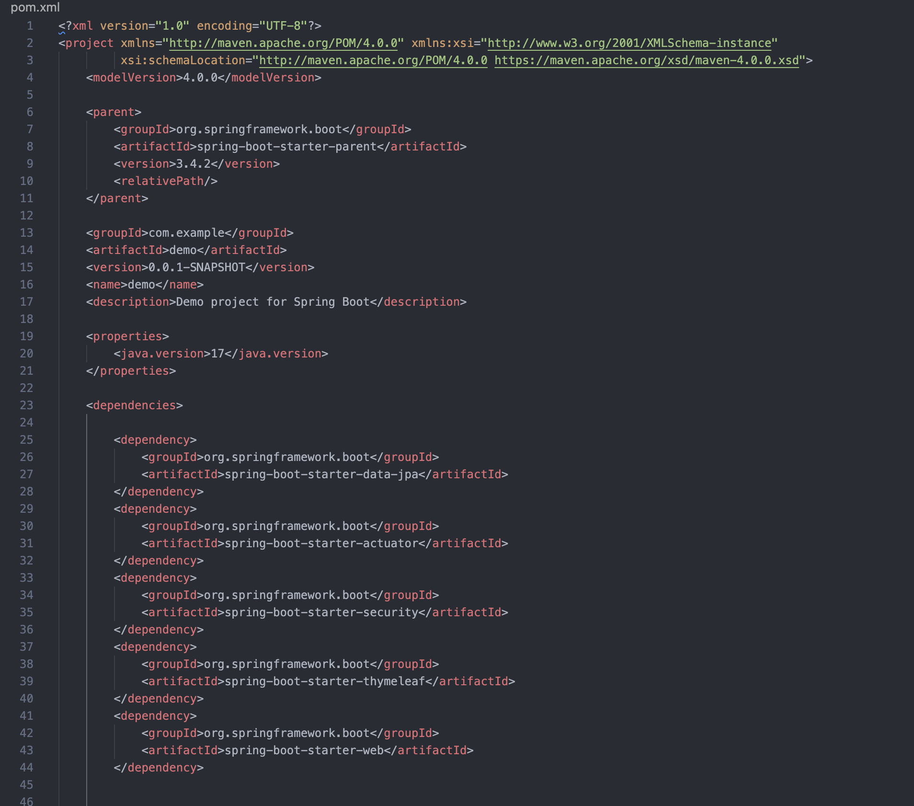
To make my project be able to be packaged into a docker container, I added a dockerfile as you can see in the screenshot, this allows my project to be built and run inside a docker container.
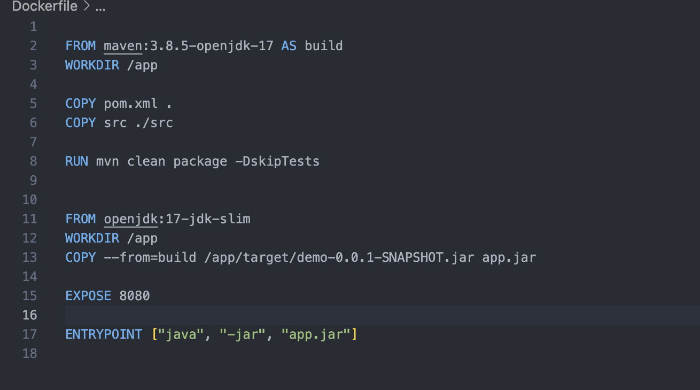
Also added the docker-compose.yml file as this allows spring boot app to interact with my database.
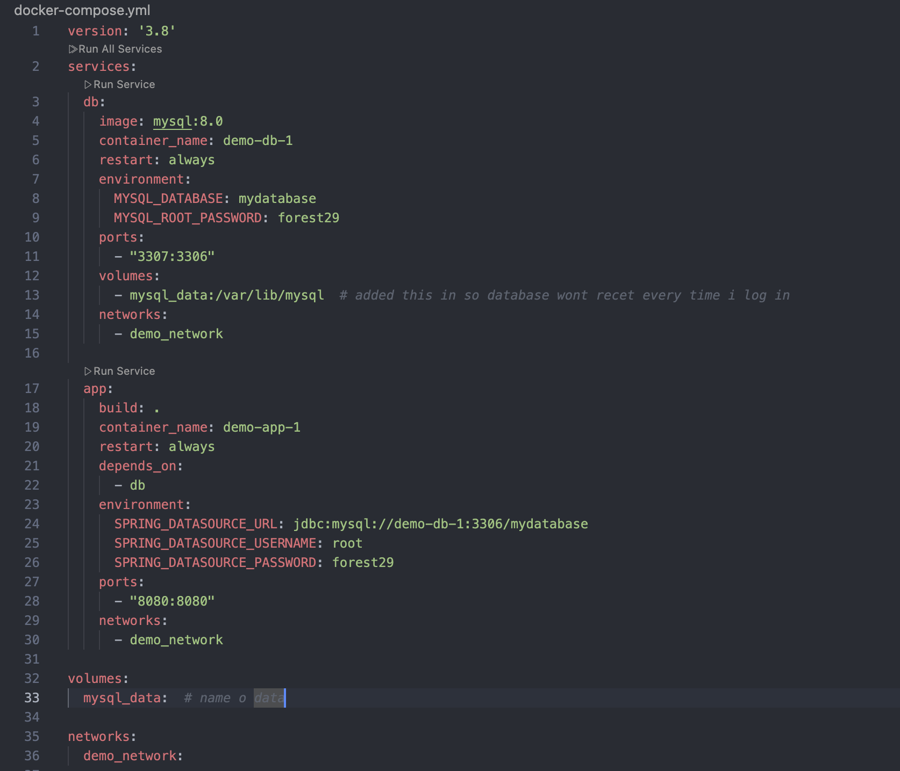
You can see me using "docker compose up --build" in my video showcasing my website at the start.
To add in a catalogue into my website, I created a products page where it lists all the products that are available.
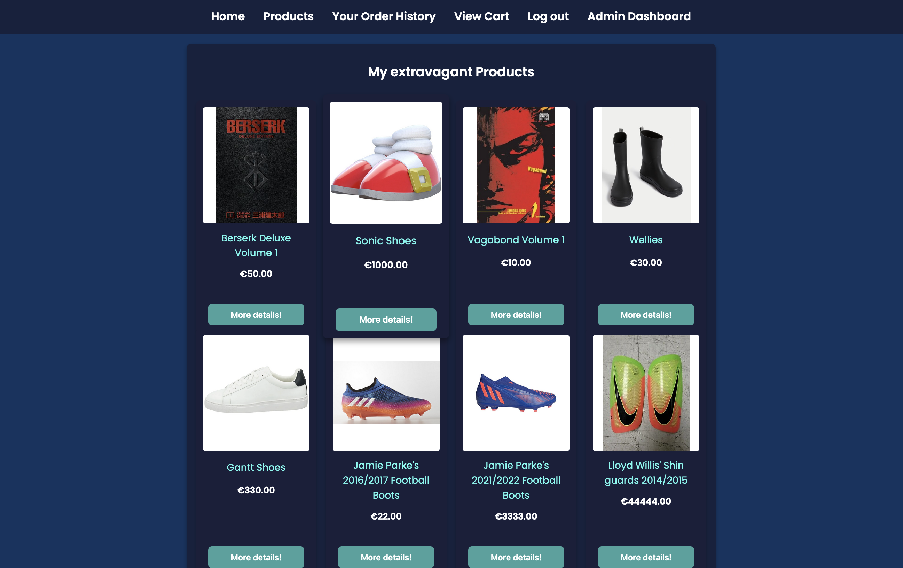
On that page, you can click view details which then shows a pop up of all the required details about the product. This way, it doesnt take you to another page so you can stay on the products page. You can also click "add product to cart" to add it to your cart.
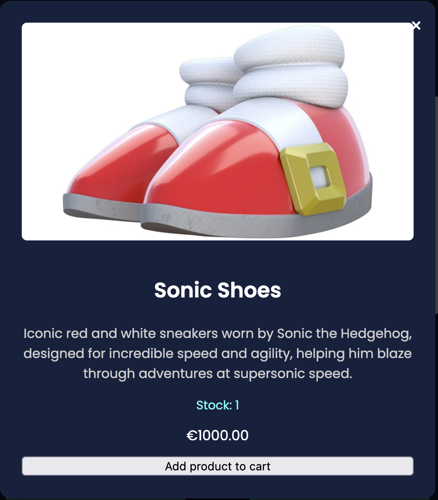
All of my products for my website is stored in my database. I created a product entity which defines all the attributes such ID, name, price, description and hidden status as you need that for the admin page.
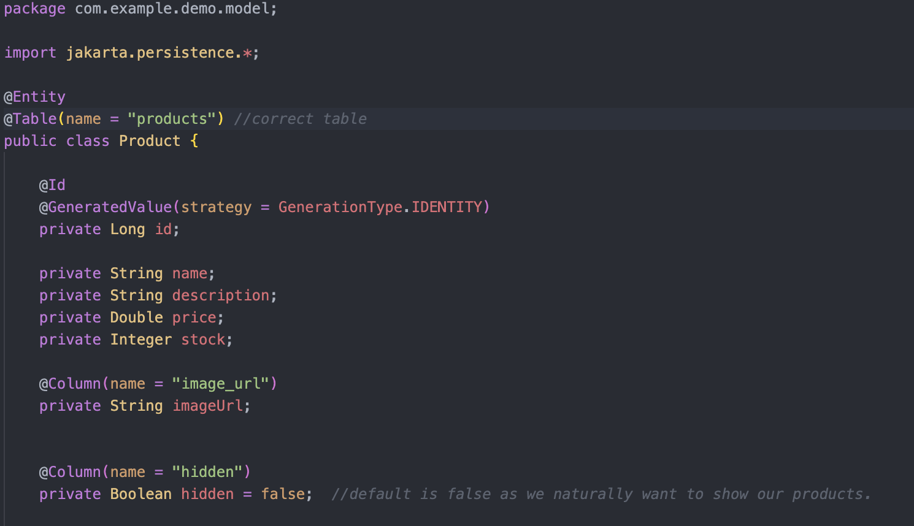
I also added a product repository so it can interact with my database as I needed to be able to change some of the products attributes later on.
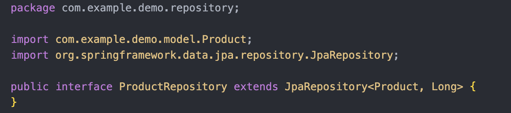
To add a shopping cart, I needed to be able to view all items in it, edit the quantity of items, remove items and also see total price for all.
The user can also change the quantity of the product as when they click a new number and press the update button, it gets the new number and inputs it into the database and recalculates the total amount.
To remove an item from the cart all it does is just refreseh the cart without that said item.
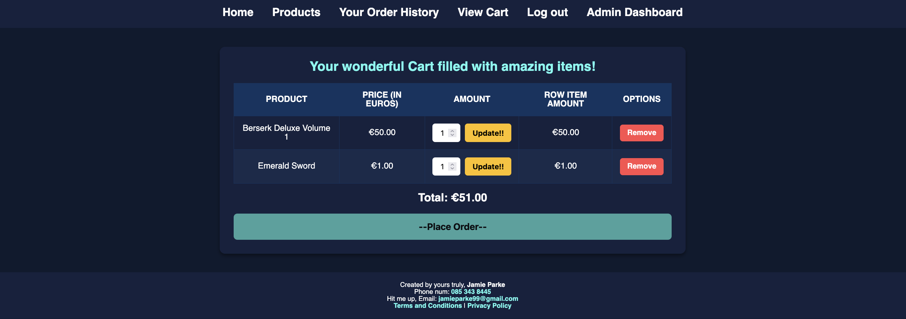
Similar to the products, I created a cart entity where it had all the important info needed such as ID, product ID, quantity and price.
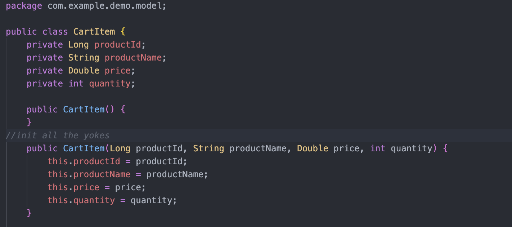
Similar to above aswell, I created a cart repository so I can make changes as I needed to.
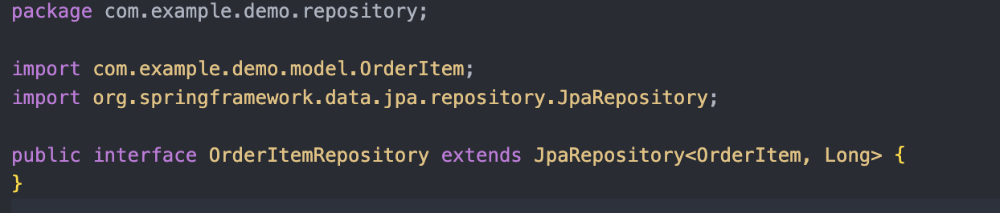
To be able to create an account and log in using an account you created, I used Spring security. You also must create an account before accessing the website so this task was needed.
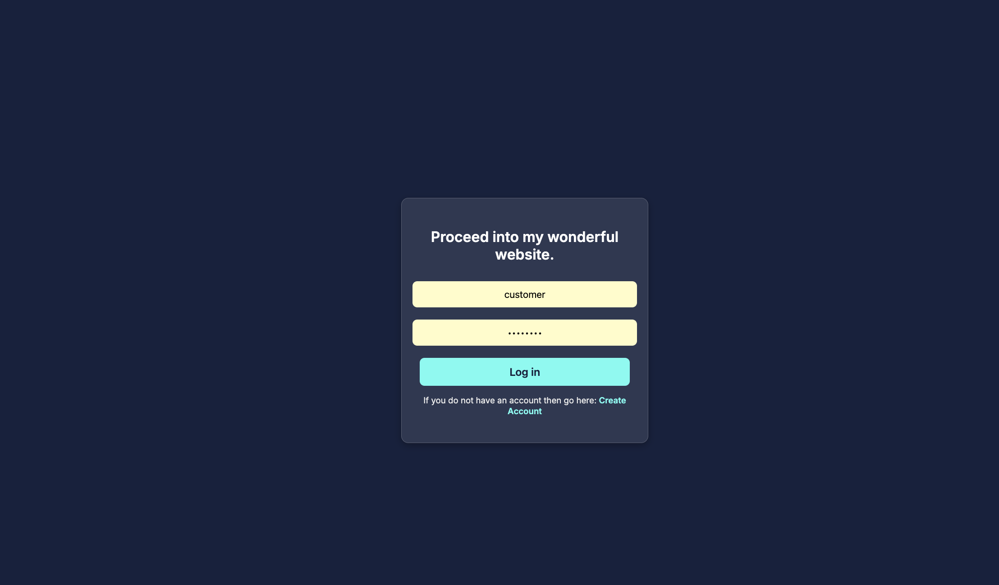
Each user created is stored in the users table in my database. It checks to see if that user is in it and lets you proceed if it is.
As each user has its own ID, we can get its order history by using its ID as a foreign key to check the orderItems table as that also tracks ID.
So basically when we want to view a users order history, the system will fetch all orders that are linked with its ID.
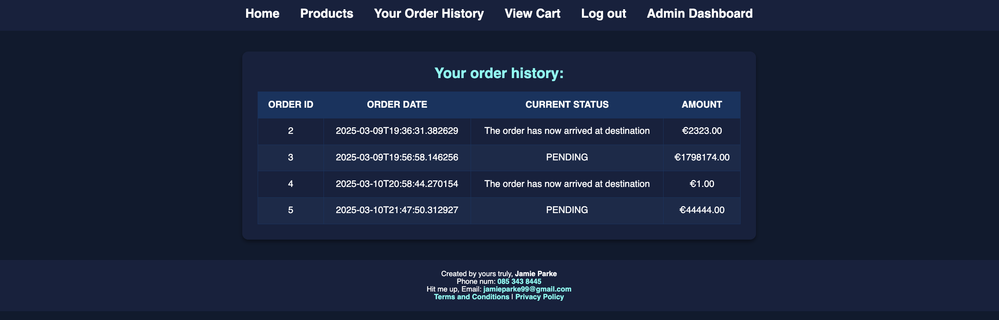
In my admin dashboard that I created, the admin can add products, modify details of existing products, and also update the status of orders. The way I implemented how only admins can access it, is I changed the header of the websites so it only shows Admin Dashboard if the users role is Admin.
This page interacts with multiple tables in my database such as products, orders and users.
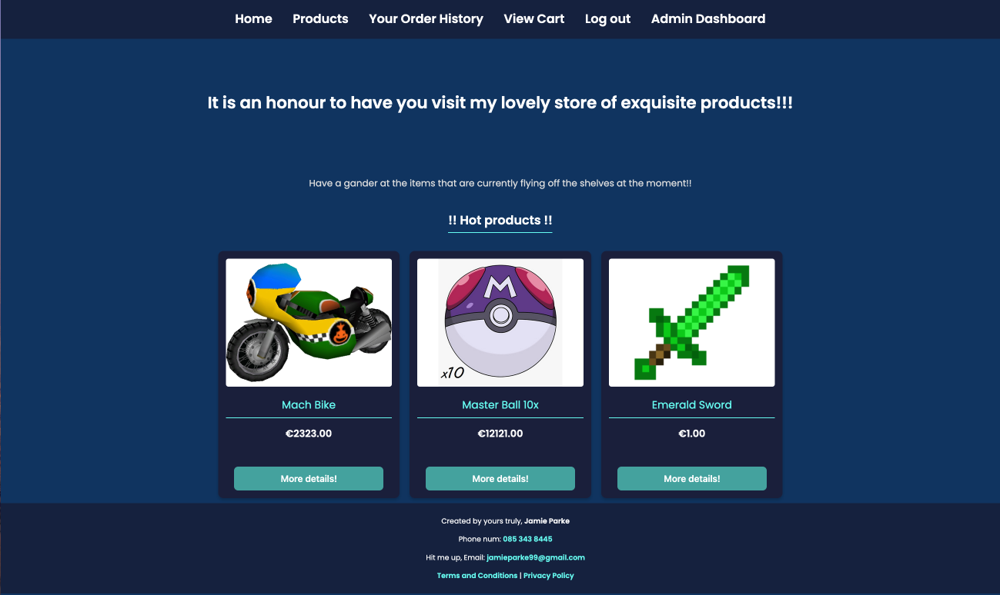
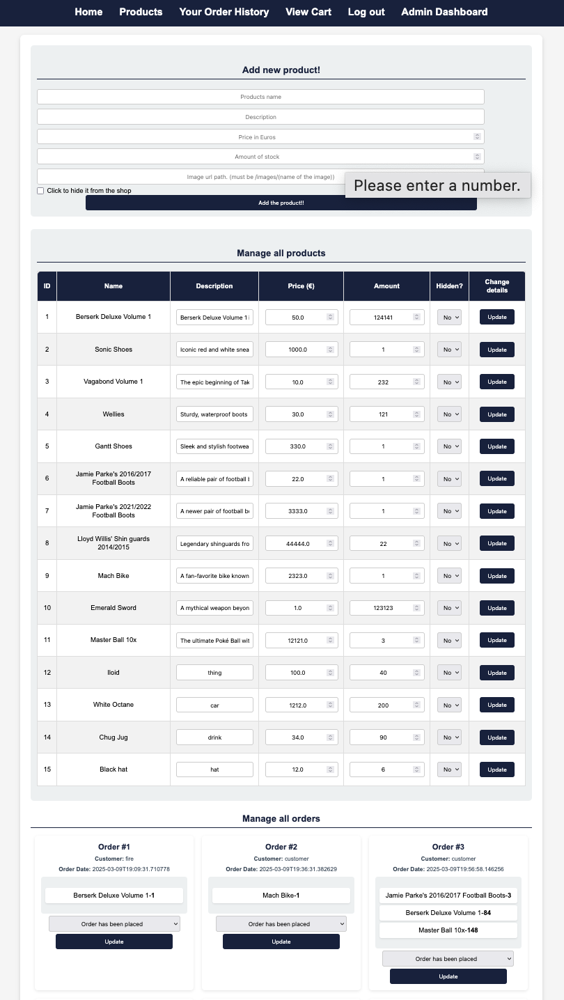
To add a new product, you fill in info into the text boxes then it runs an sql query that adds it into the database.
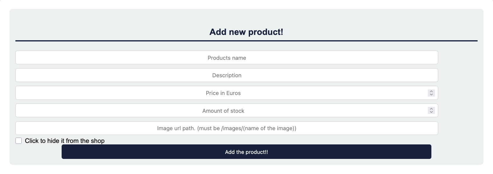
To manage the orders, you click which status you want and click update which updates the orders table.
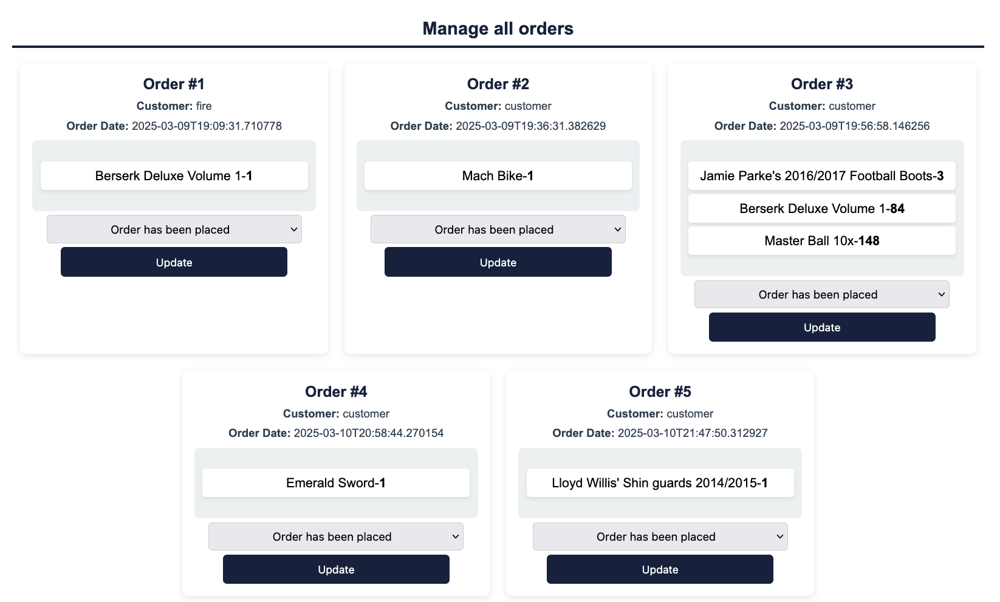
To manage all the products, they show by the same way in the catalogue, its looped over all the available ones. You can also edit the details by filling it out and clicking update which does an sql query which updates the database.
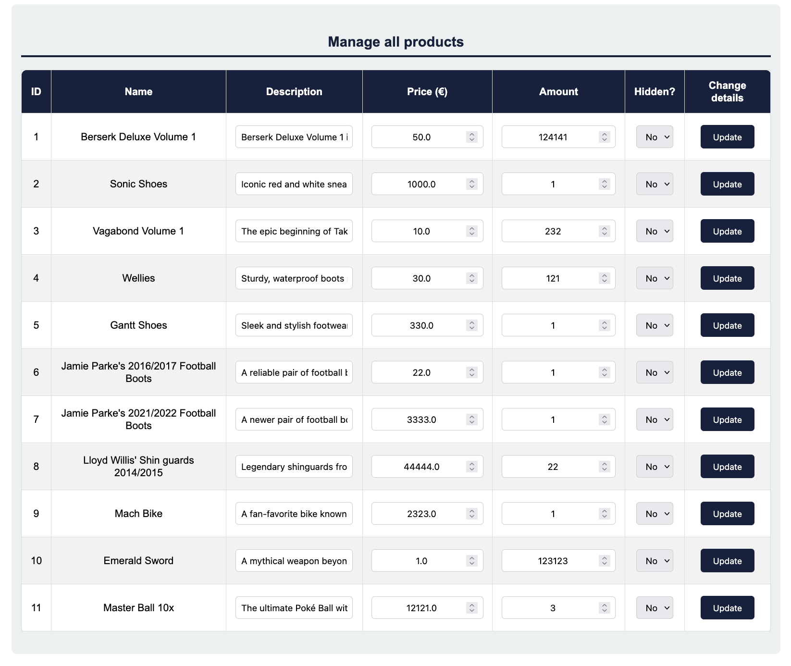
Here is a screenshot of my database schema.